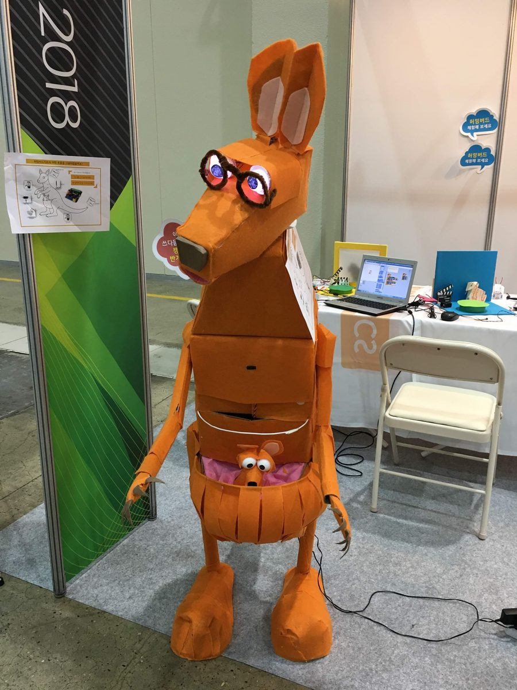
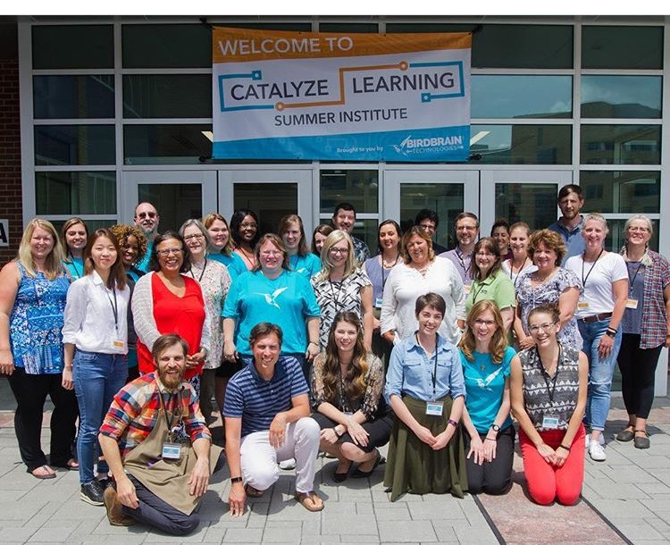

About Me
I'm Young Hyun Kim, a research assistant in the Biological Systems Engineering Laboratory at Sejong University. After completing my M.S. in August 2026, I continued my work on cardiac organoids, quantitative imaging, and instrumentation.
My path into bioengineering did not begin at the bench. Before working with stem cells, I built interactive robotics projects, developed STEAM education programs, and taught students and teachers how to turn ideas into working systems.
Across those experiences, the common thread has been the same: build a system, measure how it behaves, and use what I learn to ask a better question.

Turning Points
Built robots before I built tissues.
Worked with CreArtBot on robotics and STEAM education, designing interactive projects and teaching students and educators. → Making
Studied abroad in France.
My first extended experience living and studying in a new academic and cultural environment. → Travel
Moved from machines to living systems.
Joined a newly forming tissue-engineering research group and began working with engineered skeletal muscle and cardiac tissues.
Began building and measuring cardiac tissues.
Started my M.S. research on hiPSC-derived cardiac organoids and began developing quantitative tools for morphology, calcium dynamics, and contraction.
Expanded from analysis to instrumentation.
Extended my work into COMSOL-guided design, 3D-printed tissue systems, and electromechanical stimulation; co-authored a review in npj Robotics.
Built the tissue and the tools.
Completed my M.S. research on chamber-specific cardiac organoids, developed iCAMAnalyzer, and published my first-author review in Microsystems & Nanoengineering.
Selected highlight: Grand Prize — 4th College of Life Sciences Academic Competition, Sejong University, 2016.
Ph.D. training
I hope to use engineered cardiac models and quantitative physiology to study the mechanisms that shape normal and disease-associated cardiac function.
Before the Bench
Before I built tissues, I built robots.

Exhibition booth, 2018
BirdBrain Technologies, USA — 2018From 2017 to 2019, I worked with CreArtBot on robotics and STEAM education — designing exhibition pieces, teaching workshops, and training with BirdBrain Technologies in the U.S. That mindset—build, test, explain, share—later carried naturally into bioengineering.
Beyond the Lab
Experiences that shaped how I work with people and unfamiliar environments.
France · Exchange Semester
My first extended experience abroad — living and studying in a new academic and cultural environment.
Teaching & Mentoring
Taught laboratory courses in biochemistry and microbiology, and mentored undergraduates through independent research projects.